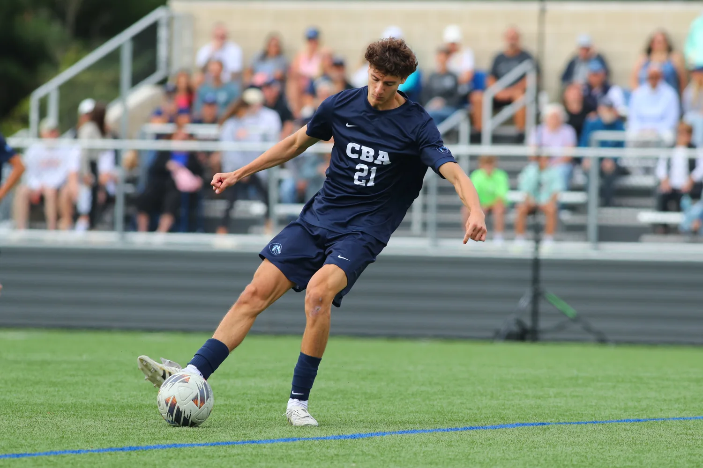
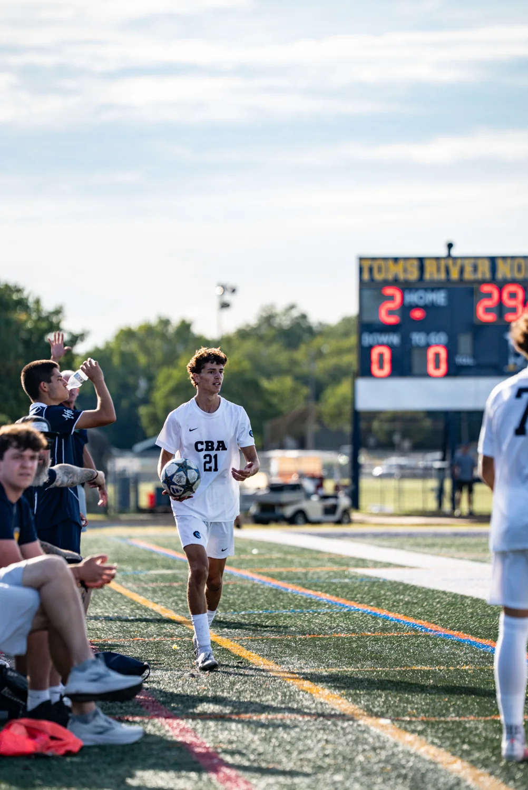
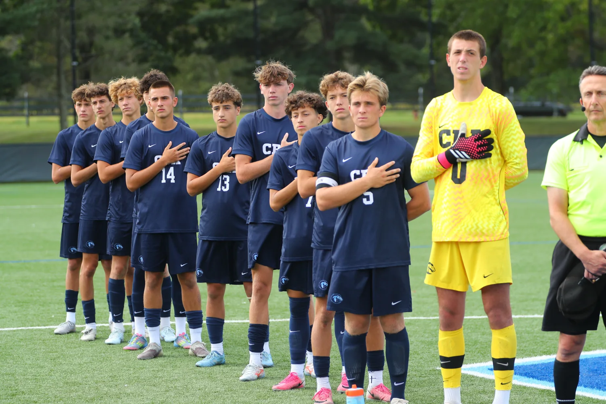
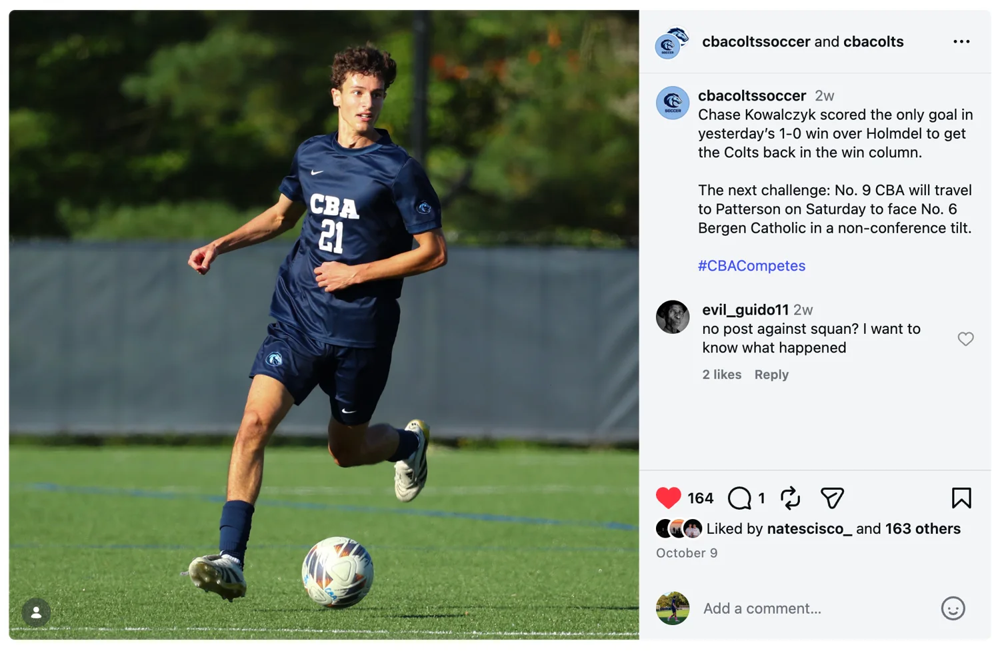
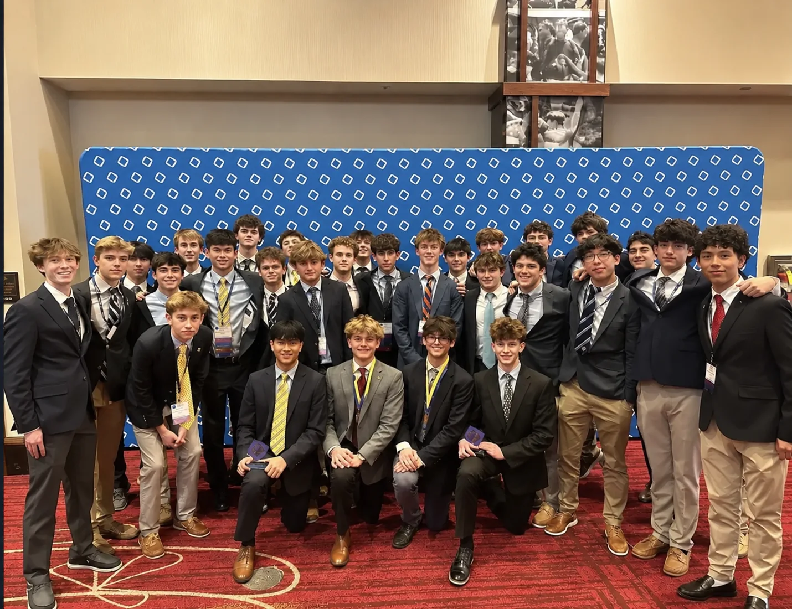

Hi, I'm
Chase.
Driven by curiosity. Grounded in teamwork. Always looking for what's next.
Get to know me ↗More than
one pursuit.
I'm a senior at Christian Brothers Academy in Lincroft, New Jersey, passionate about finance, soccer, and discovering new ways to grow.
I value commitment, curiosity and the people around me. Off the field and outside the classroom, you'll find me listening to music, traveling, skiing or spending time with friends and family.
As stated using Christian Brothers Academy (CBA) weighted numerical GPA scale · 4.3 weighted GPA
- Grade 10: 94.51
- Grade 11: 96.56
- Grade 12, Semester 1: 100.5
Think long term.
Show up today.
Whether I'm studying the markets, writing about investing, or stepping onto the soccer field, progress starts with showing up and putting in the work.
Built on
the game.
Soccer has been part of my life since I was three. It's given me lifelong friendships, unforgettable memories and a place to focus on something I love.

School soccer
Freshman, JV and Varsity at Christian Brothers Academy. Regional titles, Coach's MVP awards and experience across the right wing and right back positions.
Club soccer
Competitive play with Princeton Soccer Academy, PDA and other clubs across MLS NEXT, ECNL and EDP. Former team captain and participant in 50+ showcases and tournaments.
On & off the pitch.



From the sidelines.
Select a story to read a short overview here, then open the original reporting. Some publishers prevent full-page embedding; the source link always remains available.
The highlights.
If YouTube prevents playback in the embedded player, open the original highlight video on YouTube ↗. Playback permissions and sign-in requirements are controlled by YouTube and the video owner.
Curiosity
compounds.
I've always wanted to understand how money works: why people make the decisions they do, how businesses grow and how investing creates opportunities. Finance is what I hope to study in college and pursue as a career.
what's next.

Ideas into action.
As Vice President of Fundraising and Marketing for CBA's approximately 100-member DECA chapter, I help lead marketing and fundraising while building business, communication and leadership skills.
Learning the fundamentals.
Business & Finance
Business Decision Making
Digital Marketing
Project Management
Business Ethics
Bloomberg Market Concepts
Economics
AP Microeconomics
AP Macroeconomics
Mathematics
AP Calculus AB
AP Statistics
Learning by doing.
Through CBA's Investment Club, I research companies, discuss market trends and investment strategies, and have tracked a simulated portfolio to better understand how decisions perform over time. Over two months, I compared my portfolio's performance with those of other club members, learning how different investment choices can lead to different results. Our student-led discussions also help me think more critically about the reasoning behind each decision.
Start now.
Think ahead.
Making finance feel possible.
I started writing Start Now because investing can feel inaccessible to teenagers. My goal is to explain the fundamentals in clear language, with relatable examples and a focus on long-term habits.
Writing has been its own education: reading financial articles, exploring educational resources, using AI tools to clarify unfamiliar concepts and learning from conversations with finance professionals.
IN DEVELOPMENT · CHAPTER PREVIEW AVAILABLEEarly.
Inside the guide.
01Why Starting Early Changes Everything＋
Learn the difference between saving for near-term needs and investing for longer-term goals.
Understand assets such as stocks and funds, and why their values can change.
See how time and compounding can affect a small starting amount, using easy-to-follow examples.
02Understanding Money Before You Invest＋
Explore ways teenagers can earn money, from part-time jobs to small projects.
Separate needs, wants, and savings goals before deciding what money might be available to invest.
Build a simple budget and an emergency cushion so investing does not compete with everyday needs.
03What You’re Actually Investing In＋
Find out what owning a share of a company actually means.
Compare individual stocks, bonds, mutual funds, and exchange-traded funds using familiar examples.
Understand how diversified index funds spread exposure across companies, while still carrying market risk.
04How to Start as a Teen＋
Learn what a brokerage account does and how a parent or guardian may help a minor get started.
Explore custodial account options and how account rules can differ.
Understand how earned income relates to eligibility for certain retirement accounts, and why it matters.
05The Power of Compound Growth＋
Break down compound growth as returns potentially earning additional returns over time.
Compare illustrative monthly contributions beginning at different ages.
See why consistency, time, fees, and changing market returns all influence long-term outcomes.
06Avoiding Beginner Mistakes＋
Recognize common traps such as chasing viral stock tips, hype, or promises of fast profits.
Learn why concentrating everything in one investment can be risky.
Develop habits for checking sources, understanding volatility, and making decisions without rushing.
07Building Your First Simple Portfolio＋
Understand what a portfolio is and why spreading investments can help manage concentration risk.
Explore a simple example combining a broad index fund with a small optional allocation to individual stocks.
Think about personal goals, risk tolerance, and regular contributions rather than following one universal formula.
08The Psychology of Investing＋
Explore why markets rise and fall, including what a downturn can feel like for a new investor.
Recognize emotional decisions driven by fear of missing out or panic selling.
Practice patient, goal-based thinking and learn when it makes sense to reassess a plan.
09Your 5-Step Plan to Start This Year＋
Follow a beginner-friendly sequence: learn the basics, set a goal, build savings, research accounts, and create a plan.
Review a plain-language glossary of investing terms and answers to common teen questions.
Finish with a realistic next step that emphasizes education, patience, and long-term habits.
Why starting early matters.
What is investing? How is it different from saving? Why does time matter so much? The opening chapter introduces the basics of assets, compound growth and the mindset of a long-term investor.
It's written for readers who are starting from zero — because understanding your money shouldn't require a finance degree.
Showing up.
Giving back.
Leadership, service, work and mentorship have taught me that what you contribute matters as much as what you accomplish.
My résumé.
Explore my academic, athletic, leadership, volunteer and professional experience in one place.